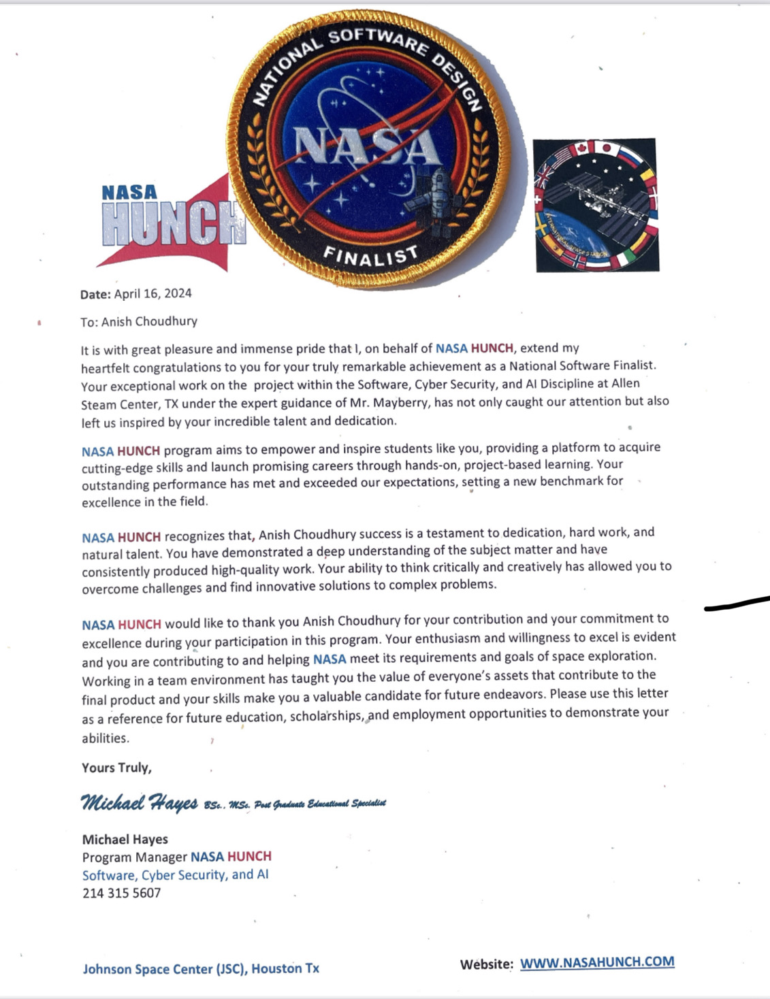

NASA Hunch 2024
My team and I made it all the way to the National finalist level in the Nasa Hunch competition!
Features
The smart mirror has a lot of features that make it cool! For example, the smart mirror uses a weather-base's API and recieves data about the weather and displays it on the mirror. The mirror also uses the NYtimes API to do the same thing, but for the news. Along with the news and weather, it also uses Spotify's API to display the music you are currently playing on your Spotify account!
Purpose
The main purpose of this prototype is to implement an effective control system that can change certain parts of the environment in a lunar base or home by using a manually controlled sensor.
A Brief Overview
A Technicial Overview


Above is some images of me and my team at the National Division of the competition at Houston. My team consists of myself, Mukesh Kalikaya, Rishi Badal, and Shreyas Newa.
